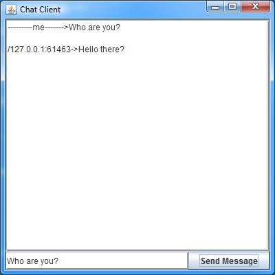

Contents:
Introduction
This example demonstrates how to use the OODSS library
to send asynchronous requests to clients. The functionality allows the server
to notify clients of changes at any point, without an initiating request from the
client. The Public Chat Service operates by updating clients with new content upon reception of
new messages from other clients. If you haven't read through the simpler
History Echo Tutorial
we encourage you to read through it before reading this tutorial.
Access to the entire ecologylab fundamental project source is available
through
anonymous SVN access (user: anonymous, password: anonymous).
The source for this tutorial is in a project
located under
/simplTutorials/trunk/
Chat Request
We will first show the implementation of the single request message in
the public chat service. ChatRequest is the message that is initially sent
from the client to indicate the posting of a new message to the chat service.
The ChatRequest message only contains the message being posted, stored as a String instance variable,
and passed in XML as an attribute.
After receiving the request message, the OODSS server automatically calls the performService method callback of
ChatRequest. In this callback the server accesses a map of all of the current
sessions running on the server as well as it's own session. This map and session
are automatically stored in the Application Scope by the OODSS framework. The server
then forms an update message with information about the originating client and the
received message. The server then loops through all of the currently connected clients
and sends an update with the message to every client except the originating one. The
server then responds with an OkMessage (a standard message defined within the OODSS library)
to indicate that the message was received.
public class ChatRequest extends RequestMessage
{
/**
* The message being posted.
*/
@simpl_scalar
String message;
/**
* Constructor used on server. Fields populated automatically by
* s.im.pl serialization
*/
public ChatRequest()
{
}
/**
* Constructor used on client.
*
* @param newEcho
* a String that will be passed to the server to broadcast
* */
public ChatRequest(String message)
{
this.message = message;
}
/**
* Called automatically by LSDCS on server
*/
@Override
public ResponseMessage performService(Scope cSScope)
{
/*
* Get all of the handles for the sessions currently connected to the
* server
*/
HashMap<Object, SessionHandle> sessionHandleMap = (HashMap<Object, SessionHandle>) cSScope
.get(SessionObjects.SESSIONS_MAP);
/*
* Get this client's SessionHandle
*/
SessionHandle mySessionHandle = (SessionHandle) cSScope
.get(SessionObjects.SESSION_HANDLE);
/*
* Form a update message to send out to all of the
* other clients.
*/
ChatUpdate messageUpdate = new ChatUpdate(message, mySessionHandle);
/*
* Loop through the other sessions.
*/
for (SessionHandle otherClientHandle : sessionHandleMap.values())
{
/*
* If this isn't me then send them an update.
*/
if (!mySessionHandle.equals(otherClientHandle))
{
otherClientHandle.sendUpdate(messageUpdate);
}
}
/*
* Send back a response confirming that we got the request
*/
return OkResponse.reusableInstance;
}
public boolean isDisposable()
{
return true;
}
}
|
Update Message
We now define the update message that is sent to clients to
indicate that another client has posted a message to the chat service.
Update messages are messages that are sent from the server to client
without being specifically requested. Updates do not require that the
client respond, if further action is necessary on the part of the client, then
it may initiate a new request. Updates must extend the UpdateMessage
class.
Our update contains the string representing the message being
posted, a string representing the poster's ip address, and the poster's
port number. Upon reception, the client calls the processUpdate
callback that ChatUpdate overrides from the abstract UpdateMessage
class. In this example, the client accesses the application scope to
access a listener for chat updates, and then informs that listener that
it has been recieved. The listener is simply a class that implements the
ChatUpdateListener interface
that has registered itself with the application scope to recieve updates
when ChatUpdates are recieved. You'll notice in the Client Instatiation section that
our client registers itself in the application scope as the CHAT_UPDATE_LISTENER.
public interface ChatUpdateListener
{
public final static String CHAT_UPDATE_LISTENER = "CHAT_UPDATE_LISTENER";
void recievedUpdate(ChatUpdate response);
}
|
public class ChatUpdate extends UpdateMessage
{
@simpl_scalar
private String message;
@simpl_scalar
private String host;
@simpl_scalar
private int port;
/**
* Constructor used on client. Fields populated automatically by
* s.im.pl serialization
*/
public ChatUpdate()
{
}
/**
* Constructor used on server
*
* @param message
* the chat message
*
* @param handle
* handle of originating client
*/
public ChatUpdate(String message, SessionHandle handle)
{
this.message = message;
this.host = handle.getInetAddress().toString();
this.port = handle.getPortNumber();
}
/**
* Called automatically by OODSS on client
*/
@Override
public void processUpdate(Scope appObjScope)
{
/* get the chat listener */
ChatUpdateListener listener = (ChatUpdateListener) appObjScope
.get(ChatUpdateListener.CHAT_UPDATE_LISTENER);
/* report incoming update */
listener.recievedUpdate(this);
}
public String getMessage()
{
return message;
}
public String getHost()
{
return host;
}
public int getPort()
{
return port;
}
}
|
Server Instantiation
We now present the initialization of an instance of DoubleThreadedNIOServer to run
our service. This is done in the same way as in the
History Echo Tutorial .
The implementation for the utility class: ChatTranslations is also given.
public class ChatTranslations
{
public final static String TRANSLATION_SPACE_NAME = "ChatTranslations";
public static TranslationScope get()
{
return TranslationScope.get(TRANSLATION_SPACE_NAME,
DefaultServicesTranslations.get(), ChatRequest.class,
ChatUpdate.class);
}
}
|
public class PublicChatServer
{
private static final int idleTimeout = -1;
private static final int MTU = 40000;
public static void main(String[] args) throws IOException
{
/*
* get base translations with static accessor
*/
TranslationScope publicChatTranslations = ChatTranslations.get();
/*
* Creates a scope for the server to use as an application scope as well
* as individual client session scopes.
*/
Scope applicationScope = new Scope();
/* Acquire an array of all local ip-addresses */
InetAddress[] locals = NetTools.getAllInetAddressesForLocalhost();
/*
* Create the server and start the server so that it can accept incoming
* connections.
*/
DoubleThreadedNIOServer historyServer = DoubleThreadedNIOServer
.getInstance(2108, locals, publicChatTranslations,
applicationScope, idleTimeout, MTU);
historyServer.start();
}
}
|
Client Instantiation
|
We now give the implementation for the client (shown to the
right), which implements the ChatUpdateListener interface
so it is able to recieve notifications of incoming chat updates. Note
that in the constructor the class registers itself as the CHAT_UPDATE_LISTENER
with the application scope. The client is implemented as a simple
swing window that allows the user to read their previous messages
along with new messages being posted to the service.
When the user presses the Send Message button the actionPerformed
method is invoked. Here we instantiate a new ChatRequest message and
send it to the server to post the message. When an update is recieved
the recievedUpdate callback is invoked. The client then
simply updates the text area to reflect the new message.
ChatClientWindow's main method sets up a regular NIOClient with
the ChatTranslations translation scope, and initializes an in
instance of the window.
|

|
public class ChatClientWindow extends JFrame implements ChatUpdateListener,
ActionListener, WindowListener
{
public static String serverAddress = "localhost";
public static int portNumber = 2108;
private JTextArea echoArea;
private JTextField entryField;
private NIOClient client;
public ChatClientWindow(NIOClient client, Scope scope)
{
/*
* Set the window as the listener for chat updates in the application
* scope. This ensures that recievedUpdate will be called when incoming
* updates are recieved.
*/
scope.put(ChatUpdateListener.CHAT_UPDATE_LISTENER, this);
/*
* Store the client instance so that we can send messages later.
*/
this.client = client;
/*
* Set's up the swing interface and add's this as an ActionListener to
* the Send Message button.
*/
setupSwingComponents();
}
@Override
public void recievedUpdate(ChatUpdate response)
{
/*
* We received an chat update message so we post the message in the text
* area.
*/
echoArea.insert(response.getHost() + ":" + response.getPort() + "->"
+ response.getMessage() + "\n\n", 0);
}
@Override
public void actionPerformed(ActionEvent e)
{
/* send message button pushed */
String message = entryField.getText();
ChatRequest request = new ChatRequest(message);
try
{
/*
* Send request to post message to chat server.
*/
client.sendMessage(request);
/*
* Update personal text area to reflect sent message.
*/
echoArea.insert("---------me------->" + message + "\n\n", 0);
}
catch (MessageTooLargeException e1)
{
System.err.println("Failed to send message because it was too large: "
+ entryField.getText());
e1.printStackTrace();
}
}
public static void main(String[] args) throws IOException
{
/*
* Get chat translations with static accessor
*/
TranslationScope publicChatTranslations = ChatTranslations.get();
Scope clientScope = new Scope();
NIOClient client = new NIOClient(serverAddress, portNumber,
publicChatTranslations, clientScope);
/*
* Enable compression and connect the client to the server.
*/
client.allowCompression(true);
client.useRequestCompression(true);
client.connect();
/*
* If the client connects, start chat window to run the application. Pass
* in client and clientScope instance.
*/
if (client.connected())
{
ChatClientWindow window = new ChatClientWindow(client, clientScope);
}
}
@Override
public void windowClosing(WindowEvent e)
{
/*
* disconnect and close
*/
client.disconnect(true);
System.exit(0);
}
......
}
|